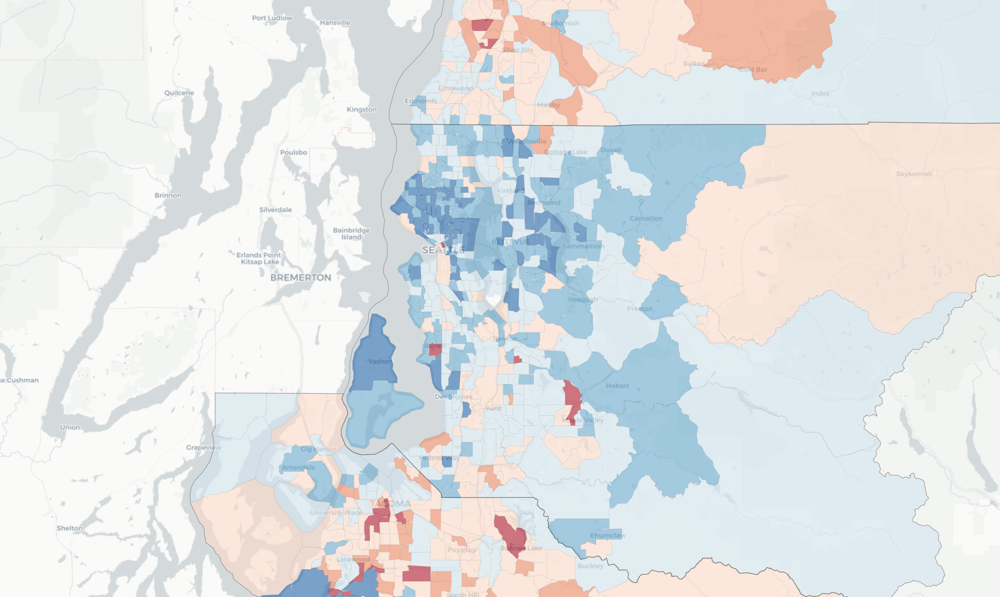

Keeping People in Their Homes: The Impact of Emergency Rental Assistance on Evictions
Analyzes the efficacy of federal eviction assistance during COVID-19. Zapatka, Thomas, Deshpande, Moore, et al.
Read more →The Eviction Research Network collects, analyzes, and maps eviction data — and helps other researchers do the same. We use social and data science to surface racial and gender disparities in eviction, and urban theory to help explain what we find.
Evidence-based research that legislatures, practitioners, and advocates can use to inform policy.
More about ERNOur goal is to expand public and scholarly knowledge on the prevalence and drivers of evictions in under-studied regions, highlight work from scholars in the field, and provide evidence-based research that legislatures, practitioners, and advocates can use to inform policy.
We build state-level eviction data pipelines, peer-reviewed methodologies, and reproducible infrastructure — for researchers, agencies, advocates, and courts.

A national forecast of where renters face the greatest combined risk of eviction, displacement, and long-term poverty.
HPRM integrates estimates of eviction risk with indicators of displacement vulnerability and pandemic-era unemployment to highlight neighborhoods where housing precarity is most severe. Policymakers, advocates, and service providers can use it to target resources, design anti-displacement strategies, and advance housing equity.
Explore the modelWe build eviction data pipelines in under-studied regions to illuminate disparities by race, gender, and geography. State profiles, dashboards, and reports arm advocates and policymakers with the evidence they need to act.
Analyzes the efficacy of federal eviction assistance during COVID-19. Zapatka, Thomas, Deshpande, Moore, et al.
Read more →
Interactive mapping tool visualizing neighborhoods at highest risk of eviction and economic displacement in the Bay Area. Thomas, Culich, Dolgoff, Driskell.
Read more →
Uses large language models to extract and understand the reasons for eviction from tenant testimonies. Ren, Thomas, Chen, Zhou.
Read more →Are you a researcher, legal aid provider, or policymaker working on eviction data in your region? We build data pipelines, train collaborators, and co-author research across the United States.
Get in touch